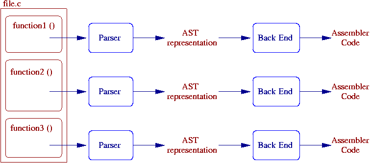

编译器的编译过程，可以粗略的分为前端和后端，如下图所示:

除了使用反汇编研究编译器的最终结果外，也可以查看编译器生成的AST树表示。AST树是编译器前端所产生的最终代码表现形式。
下面是主流编译器clang和gcc生成AST树的方法:
AST in GCC
gcc -fdump-tree-all main.c
g++ -fdump-tree-all main.cpp
关于GCC中AST树生成的更多选项，参考这里
AST in clang
clang -Xclang -ast-print -fsyntax-only main.c
关于clang中AST树生成的更多选项，参考这里